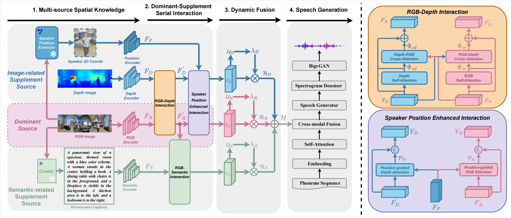

Multi-Source Spatial Knowledge Understanding for Immersive Visual Text-to-Speech
Abstract
Visual Text-to-Speech (VTTS) aims to take the spatial environmental image as the prompt to synthesize the reverberation speech for the spoken content.
Previous research focused on the RGB modality for global environmental modeling, overlooking the potential of multi-source spatial knowledge like depth, speaker position, and environmental semantics.
To address the issues, we propose a novel multi-source spatial knowledge understanding scheme for immersive VTTS, termed MS²KU-VTTS.
Specifically, we first prioritize RGB image as the dominant source and consider depth image, speaker position knowledge from object detection, and semantic captions from image understanding LLM as supplementary sources.
Afterwards, we propose a serial interaction mechanism to deeply engage with both dominant and supplementary sources. The resulting multi-source knowledge is dynamically integrated based on their contributions.
This enriched interaction and integration of multi-source spatial knowledge guides the speech generation model, enhancing the immersive spatial speech experience.
Experimental results demonstrate that the MS²KU-VTTS surpasses existing baselines in generating immersive speech. Demos and code are available at:
https://github.com/MS2KU-VTTS/MS2KU-VTTS.
MODEL ARCHITECTURE

Figure: The overview of MS2KU-VTTS, that includes the Multi-source Spatial Knowledge, the Dominant-Supplement Serial Interaction, the Dynamic Fusion and the Speech Generation.
BASELINE MODELS
1) DiffSpeech is a Text-to-Speech (TTS) model that utilizes a diffusion probabilistic approach. It takes text as input and iteratively converts noise into mel-spectrograms conditioned on the text, ensuring stable training and producing high-quality output.
(Note: DiffSpeech paper URL)
2) ProDiff is a progressive, fast diffusion model designed for high-quality speech synthesis. It takes text as input and directly predicts clean mel-spectrograms, significantly reducing the number of required sampling iterations.
(Note: ProDiff paper URL)
3) VoiceLDM is a Text-to-Speech (TTS) model that uses text as its primary input. It captures the global environmental context from descriptive prompts to generate audio that aligns with both the content and the overall situational description. Given the differences in environmental text descriptions between the training datasets—where the original dataset primarily describes the type of environment, while ours emphasizes specific components and their spatial relationships—we focus on the model's novel method of leveraging textual descriptions to guide the synthesis of reverberant speech.
(Note: Voice paper URL)
4) ViT-TTS is a Visual Text-to-Speech (VTTS) model that takes both text and environmental images as inputs. It leverages ResNet18 to extract global visual features from the image, which helps capture the room's acoustic characteristics and enhance audio generation.
(Note: ViT-TTS paper URL)
This panoramic image depicts a spacious outdoor dining area. A long wooden table, surrounded by white chairs, occupies the center. To the left and right of the table, there are sliding glass doors leading to a covered patio area with a thatched roof. The patio is adorned with hanging plants and offers views of lush greenery beyond. The overall ambiance is serene and inviting.
This panoramic image showcases a backyard scene. In the foreground, a wooden deck surrounds a blue swimming pool. To the left, a tall tree stands tall, and a small shed is visible in the background. On the right, a house with a patio is seen. The overall atmosphere is peaceful and suburban.
This panoramic image depicts a spacious basement apartment. A man stands in the center of the room, facing a kitchen area to the right. To the left, there is a hallway with a door leading to other rooms. The walls are painted white, and the floors are covered in hardwood. The overall atmosphere is clean and modern.
REFERENCES
[1] J. Liu, C. Li, Y. Ren, F. Chen, and Z. Zhao, “Diffsinger: Singing voice synthesis via shallow diffusion mechanism,” in Proceedings of the AAAI
conference on artificial intelligence, vol. 36, no. 10, 2022, pp. 11 020–11 028.
[2] R. Huang, Z. Zhao, H. Liu, J. Liu, C. Cui, and Y. Ren, “Prodiff: Progressive fast diffusion model for high-quality text-to-speech,” in Proceedings of the 30th ACM International Conference on Multimedia,
2022, pp. 2595–2605.
[3] Y. Lee, I. Yeon, J. Nam, and J. S. Chung, “Voiceldm: Text-to-speech with environmental context,” in ICASSP 2024-2024 IEEE International Conference on Acoustics, Speech and Signal Processing (ICASSP).
IEEE, 2024, pp. 12 566–12 571.
[4] H. Liu, R. Huang, X. Lin, W. Xu, M. Zheng, H. Chen, J. He, and Z. Zhao, “Vit-tts: Visual text-to-speech with scalable diffusion transformer,” in Proceedings of the 2023 Conference on Empirical Methods
in Natural Language Processing, 2023, pp. 15 957–15 969.